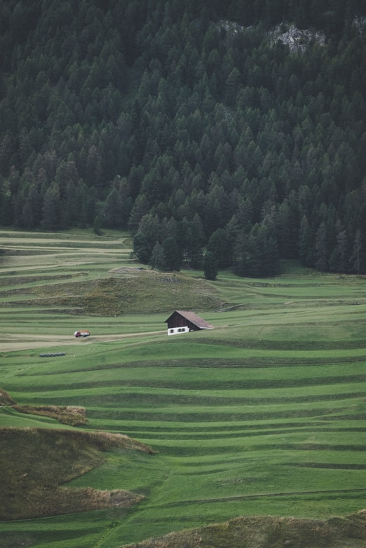

Привет, Швейцария!

Наша швейцарская приключенческая история
Местоположение, местоположение, местоположение! Церматт в Швейцарии предлагает величественные пейзажи, которые нельзя увидеть больше нигде. Например, Маттерхорн. Эта вершина — зрелище, достойное восхищения, и видеть ее вблизи намного волшебнее, чем мы могли себе представить. Хотите насладиться вкусным и уютным швейцарским завтраком? Церматт вас никогда не подведет.


Один из лучших походов, которые мы когда-либо совершали...
Будучи одной из альпийских стран, Швейцария, окруженная со всех сторон сушей, со своими горами должна конкурировать не только с соседями, но и с другими направлениями. Например, здесь нет курортов на побережье.
Преимущество заключается в том, что туризм в Швейцарии выигрывает от большого разнообразия прекрасных пейзажей на относительно небольшой территории.
Преимущество заключается в том, что туризм в Швейцарии выигрывает от большого разнообразия прекрасных пейзажей на относительно небольшой территории, предлагая множество возможностей для различных мероприятий круглый год, во все сезоны, хотя в первую очередь летом и зимой. Предложения природы, а также культуры многообразны, но, к сожалению, уровень цен по всей стране высок, и это может отпугнуть многих людей от посещения. Несмотря на этот серьезный недостаток, миллионы гостей со всего мира приезжают сюда каждый год.
Основные моменты

Амбары, построенные в XIII–XIV веках

Путешествие на удивительном поезде Бернина Экспресс

Поездка на канатной дороге ледника Маттерхорн
Отказ от ответственности
Пандемия COVID-19 нанесла серьезный удар по туристическому бизнесу в Швейцарии. Хотя туризм занимает незначительное место в швейцарском экспортном балансе, он тем не менее имеет большое значение для тех регионов страны, которые привлекают местных и иностранных посетителей. В результате карантинных мер, закрытия границ и запрета на поездки туризм рухнул и лишь ненадолго и частично восстановился летом. Его будущее неопределенно и зависит как от отношения и решений людей (будущих гостей), так и от экономики, политических мер и, конечно же, от развития пандемии.
Давайте создадим сообщество